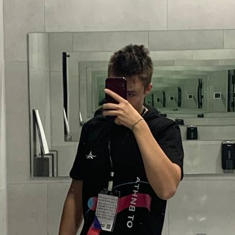

Семёнычев Савелий
I'm
Про меня
Третий год занимаюсь разработкой на Python (backend, телеграм-боты, парсеры и другие проекты). Последний год активно изучаю Go и разрабатываю backend на этом языке. Кроме того, изучаю архитектуру приложений, алгоритмы и другие базовые концепции разработки. Имею базовые знания HTML, CSS и JS. Большой опыт работы с базой данных sqlite3, некоторый опыт с Postgres и Docker.
- Дважды участник и одиножды призер научной конференции имени Н. И. Лобачевского.
- Два раза участвовал в финальном очном этапе программы Сириус.ИИ, посвященную искусственному интеллекту. В первый раз мы с командой заняли первое место в своей номинации.
- Защищал свою область на международном фестивале "ОТ ВИНТА" в Сочи и на конкурсе Союзного государства "Таланты XXI века" в Минскe.

Backend Developer
- День рождения: 27 августа 2007 г.
- Город: Ульяновск, Россия
- Возраст: 17 лет
- Email: saveliysem123@gmail.com
Примеры проектов. Подробнее в ссылках.
- Detection_cyclone Проект направлен на распознавание тропических циклонов.
- LocalSight Бот подбора различных мест для туризма.
- Очеребот "Вега" Бот предназначен для помощи пользователям в оформлении заказов в ресторане онлайн.
Мои скиллы
Несколько языков/инструментов, которые я постоянно использую
Python 85%
Go 80%
JavaScript 45%
HTML 70%
CSS 90%
Canva 75%